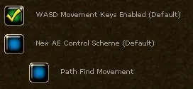
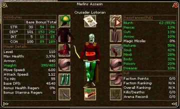
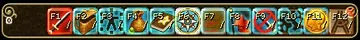
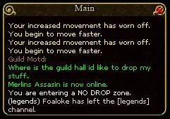

How do I ...?
Short answers to what a new player asks in the first week. Most of this is the game's own Help Menu (Esc,
then Help), put in order.
... find my way around the keys?
| Key | Opens | Key | Does |
|---|---|---|---|
B |
Backpack | Q |
Attack mode on and off |
E |
Character and equipment | ~ |
Target the nearest creature (Shift ~ at range) |
K |
Skills, and the experience pool | T |
Target Protection on and off |
L |
Quest log | Space |
Open a corpse, harvest a crop |
M |
Map | U |
Use the last item again |
V |
Spellbook | Enter |
Chat |
C |
Rune case | Num Lock |
Keep running |
F |
Followers | Esc |
Menu; leave attack or casting mode |
P |
Party | Right click, or Ctrl |
Tooltip of what is under the cursor |
G |
Guild | 1 to 9 |
The hot bars |
H |
Hunter's Handbook | F11 |
The store |

A common way to lay out the keysWiki
The character screenWiki
The hot barWiki
The chat windowWiki... fight?
Press Q for attack mode, then click a creature with a red name, or press ~ to take the nearest. With a sword
you have to stand next to it; with a bow, a crossbow or a sling you keep your distance and need ammunition
equipped. Q or Esc ends it. You regain health and stamina faster out of attack mode.
... cast a spell?
You need a wand or staff, a rune of the spell's school, and the spell.
- Equip the wand.
- Open the spellbook (
V) and drag the spell onto a hot bar. - Open the rune case (
C) and drag the rune of the school (Body, Mind, Soul or Nature) into the top right box. - Click the spell, then click the target.
Stronger spells want further runes in the next boxes (Runes of Isos, Veldan, Kuthos, Malenox, Ulthien, Sabal or Agon, dropped by creatures or sold in magic shops), and some want an ingredient in your backpack. A rune is used up slowly; when it runs out, put in another. Spells use stamina, which Intelligence gives you. Set up rune shortcuts before a long hunt to make replacement quick.
... refresh my runes quickly?
Put spare runes on a hot bar beside your spells. Clicking a rune icon equips a replacement from your supplies, saving repeated trips into the rune case. The wiki's rune-slot instructions confirm that runes can be equipped through the hot bar and replaced before they wear out.
- Check your setup. Equip your wand or staff and press
Cto see its rune slots and remaining uses. OpenVto check which runes your usual spells need. - Keep spare runes in your backpack. Buy them at a mage shop or use ones you looted. Include your school's rune (Body, Mind, Soul or Nature) and the secondary runes your spells require.
- Open a customizable bar with
1to9. Drag each spare rune from your backpack onto an empty slot. Put the rune icons next to the spells that use them so you can refresh your setup during a hunt. - Click the needed rune icon to replace it. You can also select that bar and press the slot's
F1toF12key. Check the rune case after your first replacement so you know your spell's required slots are ready, then return to casting.
The official hotkey guide explains bar selection, dragging items
onto slots and the function keys. Bar 0 holds fixed interface commands; use one of the other bars for runes.
For example, keep your Body rune beside your heal, with any secondary runes that heal needs nearby.
Restock before leaving town. Hot bar items become grey when the item is absent from your backpack.
The official rune list gives roughly 200 uses for school runes
and 100 for secondary runes; spells wear down the runes they use. Watch the counters in C and replenish
your backpack supply at the mage shop. If a spell stays grey after replacement, check its school rune,
required secondary runes and the number of slots on the weapon you have equipped.
... loot what I kill?
Stand by the body and press Space, then click what you want. In a party, and for subscribers alone too, loot
goes to the backpack by itself. Watch your weight: an overloaded character crawls.
... get a helper to fight beside me?
That is the Leadership skill, and you can use it from the first level.
- The Leadership trainer on Valinor gives you a Trainer's Whip; shops sell them too. Use it on a creature to tame it.
- What you can tame goes by your character's level; how many by your Leadership: one follower from the start, two at Leadership 30, three at 60.
Fopens the follower window. The orders are Protect (it attacks what hurts you), Assist (it attacks your target), Attack, Follow, Stay, Guard, Flee and Dismiss.- On Valinor you can tame anything up to a Small Grizzly Bear or a Skeletal Apprentice (level 8). A follower is what the guides mean when they say to bring help for BoneSnarl.
What to tame at which level, and which follower to bring to which boss, is under Followers.
... talk to people and get help?
Enter opens the chat, Tab changes the channel. /t name message writes to one player, /r message answers
the last one who wrote to you. The Help channel is on from the start and is where new players ask; people
answer. The game's Discord has the patch notes and the community: https://discord.gg/hfewEHmfYg
For a problem only staff can solve, Esc, Game Options, Summon a GM.
... play with others?
Both of you leave attack mode; then P opens the party window, or type /invite name. A party shares loot
and quest updates and sees each other on the map. /follow name walks behind somebody.
... buy, sell and store things?
- Click a shopkeeper. His goods are on the left; on the right is whatever of yours he will buy. Better standing gets better prices. Most things you sell are gone for good.
- Provisioners sell torches, bandages, bags and kindling; magic shops runes, potions and wands; taverns food; shipyards boats and fishing gear.
- The bank is one bank. What you put in at any banker is there at every other, and gold in the bank can be spent as if it were in your backpack. Leave what you do not need there before a hunt.
- To split a stack, hold
Shiftand drag. - Unwanted things go in the trash barrel by a bank.


... trade with another player?
Stand by a table (there is one in front of every banker), click the table, then the player. Both put in what they offer, both press the lock, both confirm. Know what a thing is worth first; nobody can undo a bad trade.
... mend my gear?
Every piece has health and a most health. Fights and failed skill checks wear down the first; Potions of Repair, a tradesman's repair tools or a spell bring it back. A worn piece gives less of its bonuses. Deaths outside a safe zone wear down the second, and only a tool from the store restores that. At nothing, the piece is destroyed.
... keep my stamina up?
Stamina comes back by itself, faster out of attack mode. Buy kindling, put a piece on the ground in the wild and click the campfire: you regain stamina faster beside it. Food helps too.
... know what a creature is, before it kills me?
Right click it for its tooltip. The Hunter's Handbook (H) fills in as you identify creatures, which is what
Knight Bastrop's quest on Valinor starts. Outside the game, AE Database
lists every creature with its level and what it drops, and has a
map of where each one is.
... find better gear?
Besides the quests in this guide: AE Database has a gear optimizer that picks the best pieces for your level and orbs, and a list of every quest reward. Guilds often keep a hall full of spare gear for their members.
... find things outside the game?
| ashenempires.com | The game's own site |
| Discord | Announcements, patch notes, the community |
| AE Guides | A picture walk through every early quest |
| Ashen Empires Wiki | A page for most quests |
| AE Database | Every item and creature; the gear optimizer; the monster map |
| Interactive map | Shops, banks, gates and portals |
| Dragoneer's Den | A guild's pages on trades, magic, followers and sailing |